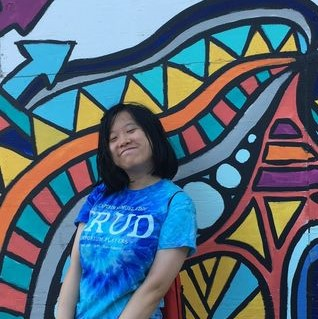

About Us
The official email for any questions or concerns about the math jam is mmmjam.team@gmail.com. It is the most active contact for anything jam-related before, during, and after the event. Also key to the math modeling jam, but not as readily available to respond as the official email listed above is the Program Director, Michael Barney. You can also learn more about and find the individual contacts of each member on the 2020-21 M3J Team below.
Learn more about the team behind the Math Modeling Jam!
MMMJam was created in 2021 by a group of high school seniors at the Massachusetts Academy of Math and Science at the Worcester Polytechnic Institute. Our hope was to open up math modeling to kids across Massachusetts and build an interest or appreciation for the applicability of STEM and math in the real world. Stay tuned for more of our events, and please contact us with any questions!
Meet the MMMJam 2021 Team
| Andrew Yang andrewyang@berkeley.edu Andrew is an event runner from Northborough, MA, and is currently a senior in high school. He’s led the effort in marketing and outreach. He’s also working on website development, the problem, and workshops. Outside of school, he loves to play the oboe and sing. |
|
| Anvi Emani semani@berkeley.edu Anvi is an event runner for MMMJam from Shrewsbury, MA! She’s led the efforts for workshop organization. She’s also worked with marketing, web development, and graphic design. She wants to increase educational opportunities, and outside of school, she likes to play tennis! |
|
 |
Anna Wyndham awyndham@wpi.edu Anna is an event runner for MMMJam from Upton, MA, and is currently a rising senior in high school. S he is working on problem and workshop development. In her free time, she likes to read and do Irish dance. |
 |
Ansh Tripathi atripathi@wpi.edu Ansh is an event runner from Westborough, MA, and is currently a rising senior in high school. He is working on the problem, workshops, and other logistical tasks for MMMJam. In his free time, he enjoys pursuing chemistry, biology, and bird watching. |
|  | Clarise Liu crliu@andrew.cmu.edu Clarise is an event runner for MMMJam from Worcester, MA! She’s in charge of the website development. She’s also working on marketing, web development, and problem writing. In her free time, she enjoys sketching, running, and volunteering in the city! |
| Garima Prabhakar garima.prabhakar@berkeley.edu Garima is an event runner for MMMJam from Shrewsbury, MA! She’s in charge of organzing, marketing, and outreach for the challenge. She’s also working on the graphics, problem, and general organizing for the event. In her free time, she likes reading fantasy and biking. |
|
| Julia Rasmussen jlrasmussen@wpi.edu Julia is an event runner for MMMJam from Paxton, MA. She’s in charge of the graphics for our marketing. She’s also working on developing the problem for the challenge, developing the website, and general organizing for the event. In her spare time, she likes to code, play guitar, and draw. |
Meet the Founders of MMMJam
| Garima Prabhakar garima.prabhakar@berkeley.edu Garima is a leader for MMMJam 2021 and a co-founder for MMMJam. She worked on marketing, organizing, the problem, and web development. She first got interested in math modeling during her math class via the High School Mathematical Contest in Modeling in her junior year of high school! She’s a Mass Academy graduate and incoming freshman at UC Berkeley majoring in Astrophysics and Mechanical Engineering. In her free time, she likes reading fantasy and biking. |
|
| Clarise Liu crliu@andrew.cmu.edu Clarise is a leader for the 2021 MMMJam, and co-founder of MMMJam from Worcester, MA. She’s worked in marketing, event logistics, website development, and problem writing. She's a Mass Academy graduate and incoming freshman at Carnegie Mellon University majoring in Computer Science with a Robotics concentration. She's passionate about making STEM more equitable and, in her freetime, she likes to play the clarinet and volunteer in the city. |
|
| Andrew Yang andrewyang@berkeley.edu Andrew is a co-founder for MMMJam from Northborough, MA, and is a recent graduate of Mass Academy. He will be attending UC Berkeley in the fall, studying computer science. He’s led the effort in marketing and outreach. He’s also working on website development, the problem, and workshops. Outside of school, he loves to play the oboe and sing. |
|
| Anvi Emani semani@berkeley.edu Anvi is a co-founder for MMMJam from Shrewsbury, MA. She’s been an event runner for the event and led the efforts for workshop organization. She graduated from Mass Academy this past year and will be attending UC Berkeley in the fall to study industrial engineering and operations research. She wants to increase educational opportunities, and outside of school, she likes to play tennis! |